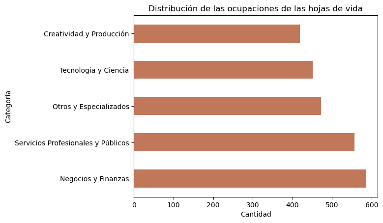
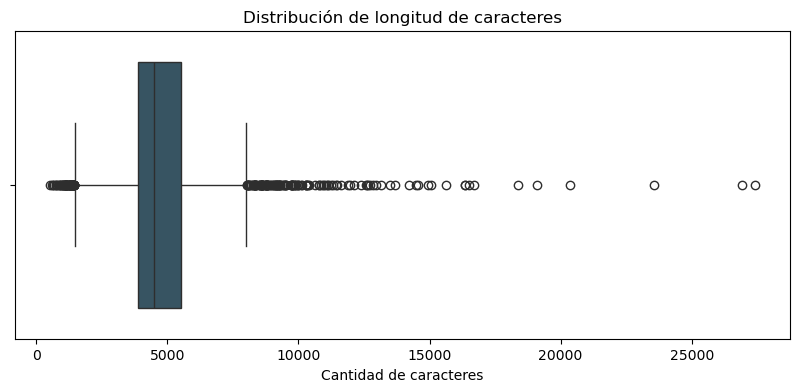
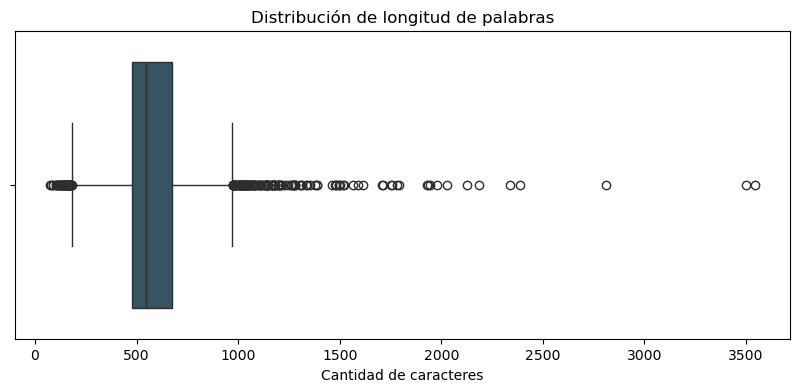
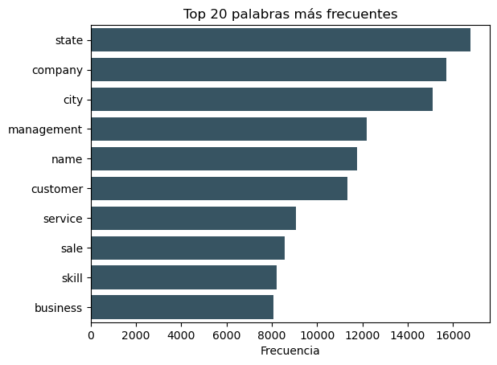
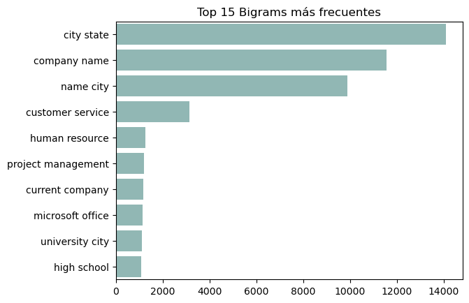
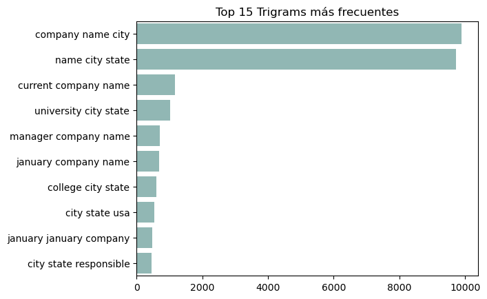
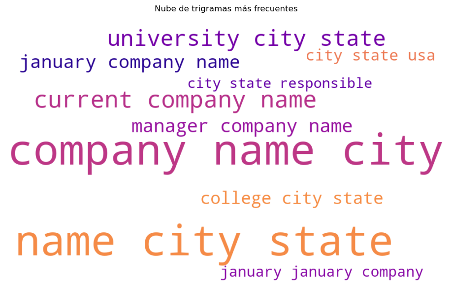

EDA - Procesamiento del Lenguaje Natural: Jarvis Calling Hiring Contest#
🔹Configuración#
# [Config] Librerías
# Principales
import numpy as np
import pandas as pd
import matplotlib.pyplot as plt
import seaborn as sns
import string, re, warnings
warnings.filterwarnings('ignore')
# NLP
import nltk
nltk.download('stopwords')
nltk.download('punkt')
nltk.download('wordnet')
from nltk.corpus import stopwords
from nltk.tokenize import word_tokenize, sent_tokenize
from nltk.stem import WordNetLemmatizer
from sklearn.feature_extraction.text import CountVectorizer
from wordcloud import WordCloud
from collections import Counter
from tqdm import tqdm
[nltk_data] Downloading package stopwords to
[nltk_data] C:\Users\Hp\AppData\Roaming\nltk_data...
[nltk_data] Package stopwords is already up-to-date!
[nltk_data] Downloading package punkt to
[nltk_data] C:\Users\Hp\AppData\Roaming\nltk_data...
[nltk_data] Package punkt is already up-to-date!
[nltk_data] Downloading package wordnet to
[nltk_data] C:\Users\Hp\AppData\Roaming\nltk_data...
[nltk_data] Package wordnet is already up-to-date!
🔹Data#
Se tienen 2,484 registros de hojas de vida, resumidos en 24 categorías únicas.
df = pd.read_csv(r'../Data/Resume.csv')
df.info()
<class 'pandas.core.frame.DataFrame'>
RangeIndex: 2484 entries, 0 to 2483
Data columns (total 4 columns):
# Column Non-Null Count Dtype
--- ------ -------------- -----
0 ID 2484 non-null int64
1 Resume_str 2484 non-null object
2 Resume_html 2484 non-null object
3 Category 2484 non-null object
dtypes: int64(1), object(3)
memory usage: 77.8+ KB
print("Registros:", df.shape[0])
print("Categorías únicas:", df['Category'].nunique())
cat_table = pd.DataFrame({
'Frecuency': df['Category'].value_counts(),
'Porcentaje': round(df['Category'].value_counts(normalize=True)*100, 2)
})
print(cat_table)
Registros: 2484
Categorías únicas: 24
Frecuency Porcentaje
Category
INFORMATION-TECHNOLOGY 120 4.83
BUSINESS-DEVELOPMENT 120 4.83
ADVOCATE 118 4.75
CHEF 118 4.75
ENGINEERING 118 4.75
ACCOUNTANT 118 4.75
FINANCE 118 4.75
FITNESS 117 4.71
AVIATION 117 4.71
SALES 116 4.67
BANKING 115 4.63
HEALTHCARE 115 4.63
CONSULTANT 115 4.63
CONSTRUCTION 112 4.51
PUBLIC-RELATIONS 111 4.47
HR 110 4.43
DESIGNER 107 4.31
ARTS 103 4.15
TEACHER 102 4.11
APPAREL 97 3.90
DIGITAL-MEDIA 96 3.86
AGRICULTURE 63 2.54
AUTOMOBILE 36 1.45
BPO 22 0.89
Las categorías de las hojas de vida dentro del DataSet tienen frecuencias variables, muy altas o muy bajas, que presentar un claro desbalance. Para efectos del análisis hemos de agrupar los registros en macro categorías un poco más balanceadas.
# Macro categorías
def map_macrogrupo(label):
# Areas económico-empresariales
if label in ['BUSINESS-DEVELOPMENT', 'ACCOUNTANT', 'FINANCE', 'BANKING', 'CONSULTANT']:
return 'Negocios y Finanzas'
# Innovación, técnica y sistemas
elif label in ['INFORMATION-TECHNOLOGY', 'ENGINEERING', 'DIGITAL-MEDIA', 'AVIATION']:
return 'Tecnología y Ciencia'
# Profesiones orientadas a servicios
elif label in ['ADVOCATE', 'PUBLIC-RELATIONS', 'HR', 'TEACHER', 'HEALTHCARE']:
return 'Servicios Profesionales y Públicos'
# Diseño, arte, moda y construcción
elif label in ['DESIGNER', 'ARTS', 'APPAREL', 'CONSTRUCTION']:
return 'Creatividad y Producción'
# Áreas diversas, operativas o nicho
elif label in ['FITNESS', 'CHEF', 'AGRICULTURE', 'AUTOMOBILE', 'BPO', 'SALES']:
return 'Otros y Especializados'
else:
return 'Sin categoría'
df['macro_label'] = df['Category'].apply(map_macrogrupo)
print("Categorías únicas:", df['macro_label'].nunique())
cat_table = pd.DataFrame({
'Frecuency': df['macro_label'].value_counts(),
'Porcentaje': round(df['macro_label'].value_counts(normalize=True)*100, 2)
})
print(cat_table)
Categorías únicas: 5
Frecuency Porcentaje
macro_label
Negocios y Finanzas 586 23.59
Servicios Profesionales y Públicos 556 22.38
Otros y Especializados 472 19.00
Tecnología y Ciencia 451 18.16
Creatividad y Producción 419 16.87
df['macro_label'].value_counts().plot(kind='barh', color='#C1785A')
plt.title('Distribución de las ocupaciones de las hojas de vida')
plt.xlabel('Cantidad')
plt.ylabel('Categoría')
plt.show()

🔹Sobre el texto#
# Cantidad total de caracteres
df['char_len'] = df['Resume_str'].str.len()
# Cantidad de palabras en un texto separando por espacios
df['word_len'] = df['Resume_str'].apply(lambda x: len(x.split()))
# Cantidad de oraciones en el texto
df['sent_len'] = df['Resume_str'].apply(lambda x: len(sent_tokenize(x)))
# Eliminar textos vacíos
df = df[df['word_len'] > 0].reset_index(drop=True)
print(df[['char_len','word_len','sent_len']].describe())
char_len word_len sent_len
count 2483.000000 2483.000000 2483.000000
mean 6297.835683 811.652437 36.343536
std 2766.943443 370.723976 23.735855
min 881.000000 113.000000 1.000000
25% 5162.500000 651.000000 21.000000
50% 5887.000000 757.000000 34.000000
75% 7227.500000 933.000000 47.000000
max 38842.000000 5190.000000 397.000000
Los resultados revelan la distribución de la extensión de los textos en las hojas de vida. En promedio, cada texto contiene aproximadamente 6,300 caracteres, 812 palabras y 36 oraciones, lo que sugiere que se trata de documentos relativamente extensos.
El rango es considerable: algunos textos tienen apenas 113 palabras y una sola oración, mientras que otros alcanzan hasta 5,190 palabras y 397 oraciones. El hecho de que el percentil 75 esté por encima de 7,200 caracteres y 933 palabras sugiere que al menos una cuarta parte de los textos son bastante densos.
En cuanto a la longitud promedio de palabra, el valor medio es de 6.3 caracteres, con una desviación estándar baja (0.37). El mínimo de 4.56 y el máximo de 7.55 muestran que algunos textos usan vocabulario más simple, mientras que otros emplean términos más complejos.
🔹 Limpieza de texto#
# [Func] Limpieza de texto
stop_words = set(stopwords.words('english'))
lemmatizer = WordNetLemmatizer()
def text_cleaner(text):
text = text.lower()
text = re.sub(r"\n|\t", " ", text) # elimina saltos de línea y tabulaciones
text = re.sub(r"http\S+|www\S+|@\S+|#\S+|\d+", " ", text) # elimina URLs, menciones, hashtags, números
text = re.sub(r"[_]{2,}", " ", text) # elimina bloques como __________
text = re.sub(r"\*", " ", text) # elimina asteriscos
text = re.sub(f"[{re.escape(string.punctuation)}]", " ", text) # elimina puntuación restante
text = re.sub(r"\s+", " ", text) # colapsa múltiples espacios
tokens = word_tokenize(text)
tokens = [t for t in tokens if t not in stop_words and len(t) > 2]
tokens = [lemmatizer.lemmatize(t) for t in tokens]
return " ".join(tokens)
df['clean_text'] = df['Resume_str'].astype(str).apply(text_cleaner)
# Registros vacíos
empty_check = df[df['clean_text'].str.strip() == ""]
print(f"Registros con texto vacío: {len(empty_check)}")
df = df[df['clean_text'].str.strip() != ""]
print(f"Registros restantes: {len(df)}")
Registros con texto vacío: 0
Registros restantes: 2483
🔹Análisis longitudinal#
df['word_len'] = df['clean_text'].apply(lambda x: len(x.split()))
df['char_len'] = df['clean_text'].apply(len)
df['char_by_len'] = df['char_len'] / df['word_len']
print(df[['word_len', 'char_len', 'char_by_len']].describe())
word_len char_len char_by_len
count 2483.000000 2483.000000 2483.000000
mean 583.997181 4793.141764 8.191531
std 260.107812 2139.580719 0.319474
min 74.000000 529.000000 6.822542
25% 476.000000 3900.000000 8.002993
50% 546.000000 4484.000000 8.216216
75% 673.000000 5539.000000 8.411181
max 3543.000000 27396.000000 9.097808
plt.figure(figsize=(10, 4))
sns.boxplot(x=df['char_len'], color='#305669', orient='h')
plt.title("Distribución de longitud de caracteres")
plt.xlabel("Cantidad de caracteres")
plt.show()
plt.figure(figsize=(10, 4))
sns.boxplot(x=df['word_len'], color='#305669', orient='h')
plt.title("Distribución de longitud de palabras")
plt.xlabel("Cantidad de caracteres")
plt.show()


df.groupby('macro_label')['word_len'].mean()
macro_label
Creatividad y Producción 562.947494
Negocios y Finanzas 589.776068
Otros y Especializados 547.345339
Servicios Profesionales y Públicos 605.834532
Tecnología y Ciencia 607.494457
Name: word_len, dtype: float64
🔹Análisis de frecuencia de palabras#
tokens = " ".join(df['clean_text']).split()
word_freq = Counter(tokens)
most_common = word_freq.most_common(10)
sns.barplot(y=[w for w,_ in most_common], x=[f for _,f in most_common], color='#305669')
plt.title('Top 20 palabras más frecuentes')
plt.xlabel('Frecuencia')
plt.show()

🔹 Análisis de n-gramas#
cv_bigram = CountVectorizer(ngram_range=(2,2), max_features=10)
bigrams = cv_bigram.fit_transform(df['clean_text'])
bigram_freq = sorted([(sum(bigrams.toarray()[:, i]), k) for k, i in cv_bigram.vocabulary_.items()], reverse=True)
sns.barplot(x=[f for f,_ in bigram_freq], y=[n for _,n in bigram_freq], color='#8ABEB9')
plt.title('Top 15 Bigrams más frecuentes')
plt.show()

cv_tigram = CountVectorizer(ngram_range=(3,3), max_features=10)
trigrams = cv_tigram.fit_transform(df['clean_text'])
trigram_freq = sorted([(sum(trigrams.toarray()[:, i]), k) for k, i in cv_tigram.vocabulary_.items()], reverse=True)
sns.barplot(x=[f for f,_ in trigram_freq], y=[n for _,n in trigram_freq], color='#8ABEB9')
plt.title('Top 15 Trigrams más frecuentes')
plt.show()

🔹Nubes de palabras#
# Crear la nube de palabras
trigram_freq = {
trigram: trigrams.toarray()[:, i].sum()
for trigram, i in cv_tigram.vocabulary_.items()
}
wordcloud = WordCloud(
width=1000,
height=600,
background_color='white',
colormap='plasma',
max_words=100
).generate_from_frequencies(trigram_freq)
# 4. Mostrar la nube
plt.figure(figsize=(12, 7))
plt.imshow(wordcloud, interpolation='bilinear')
plt.axis('off')
plt.title('Nube de trigramas más frecuentes')
plt.show()

🔹Dataset preprocesado#
df['tokens'] = df['clean_text'].apply(lambda x: x.split())
df['bert_text'] = df['Resume_str'].astype(str).str.lower().str.replace(r'[^a-zA-Z\s]', '', regex=True)
df['fasttext_text'] = '__label__' + df['Category'].astype(str) + ' ' + df['clean_text']
final_df = df[['macro_label', 'Resume_str', 'clean_text', 'tokens', 'bert_text', 'fasttext_text']]
final_df.to_csv('../Data/Clean_words.csv', index=False)
final_df.head()
| macro_label | Resume_str | clean_text | tokens | bert_text | fasttext_text | |
|---|---|---|---|---|---|---|
| 0 | Servicios Profesionales y Públicos | HR ADMINISTRATOR/MARKETING ASSOCIATE\... | administrator marketing associate administrato... | [administrator, marketing, associate, administ... | hr administratormarketing associate\n... | __label__HR administrator marketing associate ... |
| 1 | Servicios Profesionales y Públicos | HR SPECIALIST, US HR OPERATIONS ... | specialist operation summary versatile medium ... | [specialist, operation, summary, versatile, me... | hr specialist us hr operations ... | __label__HR specialist operation summary versa... |
| 2 | Servicios Profesionales y Públicos | HR DIRECTOR Summary Over 2... | director summary year experience recruiting pl... | [director, summary, year, experience, recruiti... | hr director summary over ... | __label__HR director summary year experience r... |
| 3 | Servicios Profesionales y Públicos | HR SPECIALIST Summary Dedica... | specialist summary dedicated driven dynamic ye... | [specialist, summary, dedicated, driven, dynam... | hr specialist summary dedica... | __label__HR specialist summary dedicated drive... |
| 4 | Servicios Profesionales y Públicos | HR MANAGER Skill Highlights ... | manager skill highlight skill department start... | [manager, skill, highlight, skill, department,... | hr manager skill highlights ... | __label__HR manager skill highlight skill depa... |